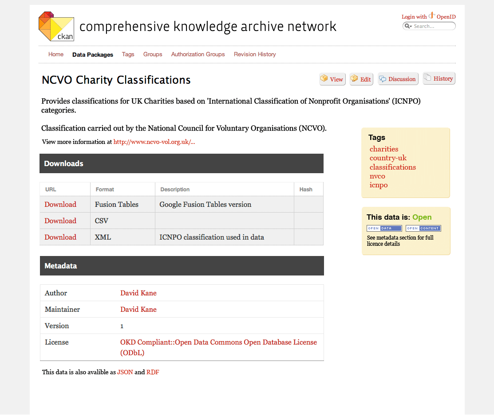

| Version 2 (modified by memespring, 3 years ago)
(diff) |
|---|
|
--
|
Redesign Notes - Package page
- Ratings is rating really much use? It's hard to know what is being rated - quality, openness, interestingness, format. Suggest removing and focus on comments / discussion.
- Comments - Suggest move to a separate tab and rename discussion as per Wikipedia.
- Comments - Add hint to new page suggesting what sort of comments/questions people should make
- Getting the data - Can we make the download (Resources) section clearer or more prominant? This seems to be the primary purpose of this page for a casual user.
- Getting the data - 'resources' is unclear term, just call it 'downloads?'
- Groups - Confusing having groups and tags on this page, suggest remove groups for now focus on tags as primary method for organising / grouping.
- Tags - Should be able to add a tag directly via ajax (as per flickr)
- Title - Name of package gets lot in the buttons (edit etc) and the package slug id
- Buttons - move to top right
- API / package slug - Create new API section the explains the slug id and how to access via datapkg etc
Example mockup

Download in other formats:
{kind=link}
{kind=link}
{kind=link}
{kind=link}
{kind=link}
{kind=link}
{kind=link}
{kind=link}
{kind=link}
{kind=link}